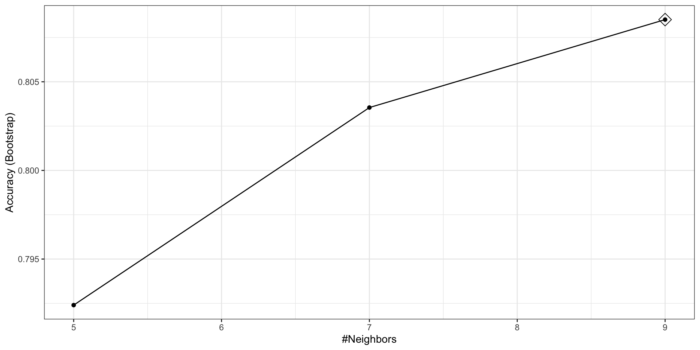

The caret package
2024-12-09
The caret package
There dozens of machine learning algorithms.
Many of these algorithms are implemented in R.
However, they are distributed via different packages, developed by different authors, and often use different syntax.
The caret package tries to consolidate these differences and provide consistency.
The caret package
- It currently includes over 200 different methods which are summarized in the caret package manual.
The caret package
We use the 2 or 7 example to illustrate.
Then we apply it to the larger MNIST dataset.
The train function
Functions such as
lm,glm,qda,lda,knn3,rpartandrandomForrestuse different syntax, have different argument names, and produce objects of different types.The caret
trainfunction lets us train different algorithms using similar syntax.
The train function
- For example, we can type the following to train three different models:
The predict function
The
predictfunction is very useful for machine learning applications.Here is an example with regression:
The predict function
- In this case, the function is simply computing.
\[ \widehat{p}(\mathbf{x}) = \widehat{\beta}_0 + \widehat{\beta}_1 x_1 + \widehat{\beta}_2 x_2 \]
- for the
x_1andx_2in the test setmnist_27$test.
The predict function
- With these estimates in place, we can make our predictions and compute our accuracy:
The predict function
predictdoes not always return objects of the same typeit depends on what type of object it is applied to.
To learn about the specifics, you need to look at the help file specific for the type of fit object that is being used.
The predict function
predictis actually a special type of function in R called a generic function.Generic functions call other functions depending on what kind of object it receives.
So if
predictreceives an object coming out of thelmfunction, it will callpredict.lm.If it receives an object coming out of
glm, it callspredict.glm.If from
knn3, it callspredict.knn3, and so on.
The predict function
- These functions are similar but not exactly.
- There are many other versions of
predictand many machine learning algorithms define their ownpredictfunction.
The predict function
As with
train, caret unifies the use ofpredictwith the functionpredict.train.This function takes the output of
trainand produces prediction of categories or estimates of \(p(\mathbf{x})\).
The predict function
- The code looks the same for all methods:
- This permits us to quickly compare the algorithms.
The predict function
- For example, we can compare the accuracy like this:
Resampling
When an algorithm includes a tuning parameter,
trainautomatically uses a resampling method to estimate MSE and decide among a few default candidate values.To find out what parameter or parameters are optimized, you can read the caret manual.
The predict function
- Or study the output of:
- To obtain all the details of how caret implements kNN you can use:
Resampling
- If we run it with default values:
- you can quickly see the results of the cross validation using the
ggplotfunction.
Resampling
The argument highlight highlights the max.
Resampling
By default, the resampling is performed by taking 25 bootstrap samples, each comprised of 25% of the observations.
We change this using the
trControlargument. More on this later.For the
kNNmethod, the default is to try \(k=5,7,9\).We change this using the
tuneGridargument.
Resampling
Let’s try
seq(5, 101, 2).Since we are fitting \(49 \times 25 = 1225\) kNN models, running this code will take several seconds.
Resampling

Note
Because resampling methods are random procedures, the same code can result in different results.
To assure reproducible results you should set the seed.
Resampling
- To access the parameter that maximized the accuracy, you can use this:
- and the best performing model like this:
Resampling
The function
predictwill use this best performing model.Here is the accuracy of the best model when applied to the test set, which we have not yet used because the cross validation was done on the training set:
Resampling
Bootstrapping is not always the best approach to resampling.
If we want to change our resampling method, we can use the
trainControlfunction.For example, the code below runs 10-fold cross validation.
Resampling
- We accomplish this using the following code:
Note
- The
resultscomponent of thetrainoutput includes several summary statistics related to the variability of the cross validation estimates:
- You can learn many more details about the caret package, from the manual.
Preprocessing
- Now let’s move on to the MNIST digits.
Preprocessing
- The dataset includes two components:
Preprocessing
- Each of these components includes a matrix with features in the columns:
- and vector with the classes as integers:
Preprocessing
Because we want this example to run on a small laptop and in less than one hour, we will consider a subset of the dataset.
We will sample 10,000 random rows from the training set and 1,000 random rows from the test set:
Preprocessing
When fitting models to large datasets, we recommend using matrices instead of data frames, as matrix operations tend to be faster.
If the matrices lack column names, you can assign names based on their position:
Preprocessing
We often transform predictors before running the machine algorithm.
We also remove predictors that are clearly not useful.
We call these steps preprocessing.
Examples of preprocessing include standardizing the predictors, taking the log transform of some predictors, removing predictors that are highly correlated with others, and removing predictors with very few non-unique values or close to zero variation.
Preprocessing
Preprocessing
- The caret packages includes a function that recommends features to be removed due to near zero variance:
Preprocessing
- We can see the columns recommended for removal are the near the edges:

Preprocessing
- So we end up removing
predictors.
Preprocessing
The caret package features the
preProcessfunction, which allows users to establish a predefined set of preprocessing operations based on a training set.This function is designed to apply these operations to new datasets without recalculating anything on the test set, ensuring that all preprocessing steps are consistent and derived solely from the training data.
Preprocessing
- Below is an example demonstrating how to remove predictors with near-zero variance and then center the remaining predictors:
pp <- preProcess(x, method = c("nzv", "center"))
centered_subsetted_x_test <- predict(pp, newdata = x_test)
dim(centered_subsetted_x_test) [1] 1000 252- Additionally, the
trainfunction in caret includes apreProcessargument that allows users to specify which preprocessing steps to apply automatically during model training.
kNN
- The first step is to optimize for \(k\).
kNN
- Once we optimize our algorithm, the
predictfunction defaults to using the best performing algorithm fit with the entire training data:
kNN
- We achieve relatively high accuracy: